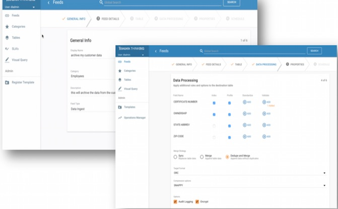

Features

Ingest
Self-service data ingest with data cleansing, validation, and automatic profiling.
Organizations can expend significant engineering effort moving data into Hadoop yet struggle to maintain governance and data quality. Kylo dramatically simplifies data ingest by shifting ingest to data owners through a simple guided UI.
Kylo can connect to most sources and infer schema from common data formats. Kylo's default ingest workflow moves data from source to Hive tables with advanced configuration options around field-level validation, data protection, data profiling, security, and overall governance.
Using Kylo's pipeline template mechanism, IT can extend Kylo's capabilities to connect to any source, any format, and load data into any target in a batch or streaming pattern.
READ FAQWATCH VIDEO
Kylo can connect to most sources and infer schema from common data formats. Kylo's default ingest workflow moves data from source to Hive tables with advanced configuration options around field-level validation, data protection, data profiling, security, and overall governance.
Using Kylo's pipeline template mechanism, IT can extend Kylo's capabilities to connect to any source, any format, and load data into any target in a batch or streaming pattern.
READ FAQWATCH VIDEO
Prepare
Wrangle data with visual sql and an interactive transform through a simple user interface.
Preparing data is the first step in any analytics project. Using Kylo's transformation feature, IT can step aside and let power users such as data analysts take control of their own data preparation tasks. Kylo leverages the latest capabilities of Apache Spark to create interactive data transformation. Organizations can throw out their old ETL tools and save hundreds of thousands of dollars in license and maintenance fees.
WATCH VIDEO
WATCH VIDEO
Discover
Search and explore data and metadata, view lineage, and profile statistics.
What's the point of having a data lake if users can't find data or trust what is there? Kylo includes an integrated metadata repository and key capabilities for data exploration. Users can perform Google-like searches against data and metadata to discover entities of interest. Visual process lineage and provenance provides confidence in the origin of data. Automatic data profiling provides capabilities for data scientists and assurance in data quality.
WATCH VIDEO
WATCH VIDEO
Monitor
Monitor health of feeds and services in the data lake. Track SLAs and troubleshoot performance.
IT Operations are the carekeepers of your production data lake. Kylo departs from traditional monitoring tools to provide health indicators from a feed-centric perspective. This means Operations has not only visibility on service issues impacting availability, but can track service levels associated with data arrival and distinct quality metrics. Using Kylo, IT can give users confidence in data maintained in the data lake.
WATCH VIDEO
WATCH VIDEO
Design
Design batch or streaming pipeline templates in Apache NiFi and register with Kylo to enable user self-service.
IT Designers can extend Kylo's feed capabilities around ingest, transformation, and export by developing new pipeline templates in Apache NiFi. NiFi provides a visual canvas with over 180 data connectors and transforms for batch and stream-based processing. Kylo and NiFi together act as an "intelligent edge" able to orchestrate tasks between your cluster and data center.
Designers develop and test new pipelines in Apache NiFi and register templates with Kylo determining what properties users are allowed to configure when creating feeds. This embodies the principle of write-once-use-many and enables data owners instead of engineers to create new feeds while IT retains control over the underlying dataflow patterns.
Kylo adds a suite of NiFi processors for Spark, Sqoop, Hive, and special purpose data lake primitives that provide additional capabilities.
WATCH VIDEO
Designers develop and test new pipelines in Apache NiFi and register templates with Kylo determining what properties users are allowed to configure when creating feeds. This embodies the principle of write-once-use-many and enables data owners instead of engineers to create new feeds while IT retains control over the underlying dataflow patterns.
Kylo adds a suite of NiFi processors for Spark, Sqoop, Hive, and special purpose data lake primitives that provide additional capabilities.
WATCH VIDEO
Who uses Kylo?
Kylo is being used by leading organizations: